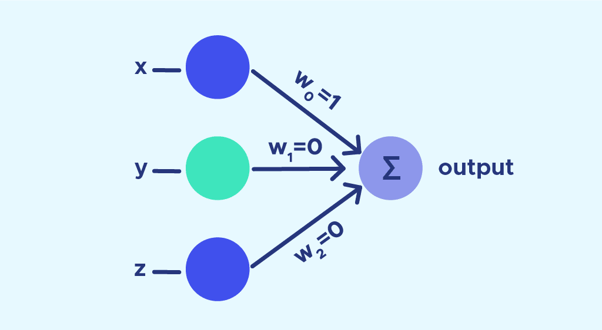
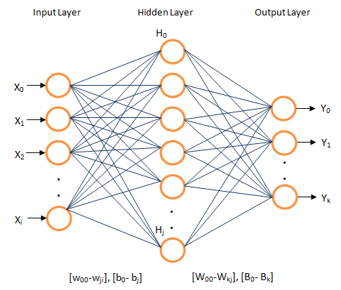
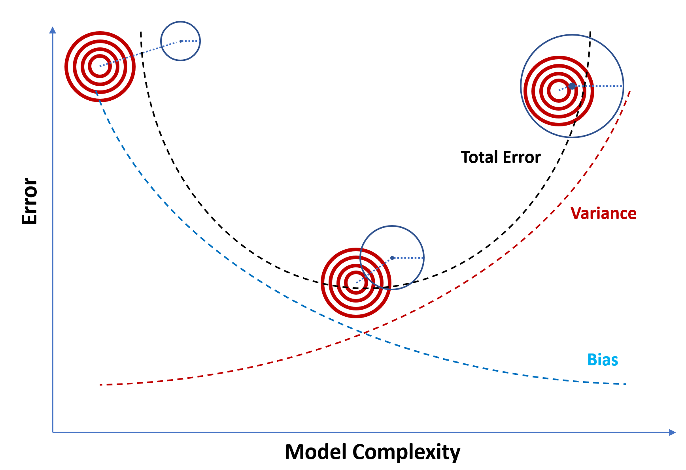
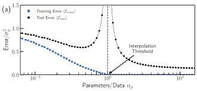

Neural Networks
In 1943, a neurophysiologist named Warren McCulloch and a mathematician named Walter Pitts tried to explain how neurons in the brain may work.
They created a simple model of a neuron using electrical circuits, creating the first neural network.
Surprisingly, neural networks were unpopular for many decades; however, slow advances in the field slowly shifted research.
Neural networks nowadays are the backbone of almost all modern machine learning systems, including LLMs.
How Does it Work
While the inspiration comes from the neural network of our brains, modern neural networks function differently.
Let's say we want to model the behavior of students before a test using a single neuron. A single neuron (also known as a perceptron) takes in some inputs and scales them by their corresponding weight,
sums them together, before adding or subtracting some bias and outputting the result. As a student, your decisions (Outputs) are influenced by the
context (Inputs) of your specific situation. Let's assume that all students care about is the days until the deadline and their fondness for the course.
Below represents the corresponding neuron:

A neural network connects multiple neurons layer by layer to increase complexity. Often neural networks are divided into 3 parts: the input layer, the hidden layers, and the output layer. Using a neural network instead to model the example we have:

Training
A neural network by itself would simply output nonsense; however, through a process known as "training," a neural network can learn patterns.
This can only be done if:
1. There is a defined and easily measurable goal.
2. There is a sufficient number of examples.
3. There is enough of a pattern to learn.
The Bias-Variance Tradeoff and Double Descent
Another very important concept is known as the bias-variance tradeoff. Techniques that reduce variance result in an increase in bias, and the converse also holds. In practice, this means that models should not be too big or too small. When they are small (underfitting), their bias is large but variance is small, and the other way around for when the model is too big (overfitting). The least error occurs when the model perfectly fits the data.

One perhaps more intuitive explanation for this behavior is that:
When the model is underfitting, it is not big enough to capture the pattern intrinsic to the data.
When the model is overfitting, it ends up learning the noise in the training data provided.
It is unknown the exact cause for this phenomenon; however, under certain circumstances, the model—beyond the point of overfitting—may have its error drop back down. This depends on the learning algorithm used, the problem being solved, and many more factors that are not fully understood. This phenomenon is known as double descent.

One potential way to explain the phenomenon is that really big models are essentially made up of many smaller models. Generally, the better smaller models making up the larger model learn faster. Thus, when the model finishes training, it functions equivalently to the better of all the possible smaller models.
References
"History of Artificial Neural Networks." Wikipedia, Wikimedia Foundation, en.wikipedia.org/wiki/History_of_artificial_neural_networks.
Nielsen, Michael A. Neural Networks and Deep Learning. Determination Press, 2015, neuralnetworksanddeeplearning.com/.
"Bias–Variance Tradeoff." Wikipedia, Wikimedia Foundation, en.wikipedia.org/wiki/Bias–variance_tradeoff.
Nakkiran, Preetum, et al. "Deep Double Descent: Where Bigger Models and More Data Hurt." arXiv preprint arXiv:1912.02292, 2019, arxiv.org/abs/1912.02292.